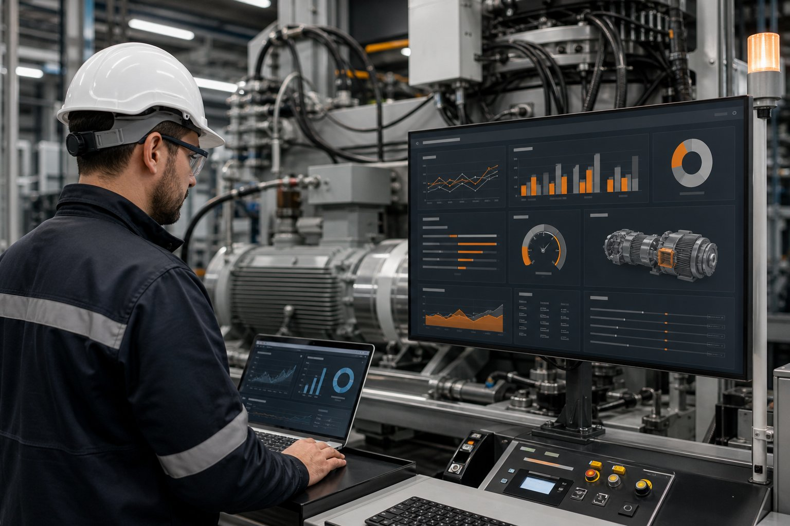

Wyzwanie
Informacje o awariach były rozproszone pomiędzy panelami operatorskimi, notatkami i arkuszami. Trudno było porównać linie oraz ustalić rzeczywiste przyczyny przestojów.
Przykładowa realizacja / Dane
Przykładowy system zbierania sygnałów maszynowych, alarmów i przestojów z czytelnym widokiem KPI dla zespołu technicznego.

Informacje o awariach były rozproszone pomiędzy panelami operatorskimi, notatkami i arkuszami. Trudno było porównać linie oraz ustalić rzeczywiste przyczyny przestojów.
Sygnały z maszyn trafiają do wspólnej bazy zdarzeń. Aplikacja prezentuje historię alarmów, czas pracy, przestoje i najważniejsze wskaźniki dla wybranego okresu.
Technicy szybciej identyfikują źródło problemu, a kierownictwo otrzymuje porównywalne dane o dostępności maszyn.
Materiał zastępczy
Przykładowa grafika do późniejszej wymiany.